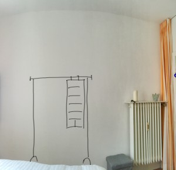
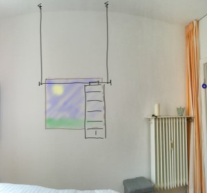
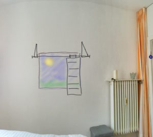
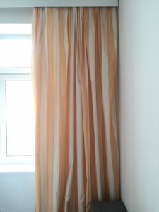
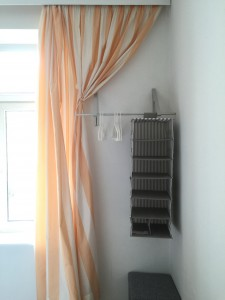

Gemeinsam zu einer besseren Lösung
Büroarbeit heute ist voll von Herausforderungen. Kreativität, Lösungskompetenz, Flexibilität sind gefragt. Natürlich gibt es auch noch eine Menge stupider Aufgaben – doch gerade davon sollen Sie durch „digitale Helferlein“ ja zunehmend befreit werden. Allemal im Büro der Zukunft ist Ihr Kopf also noch mehr gefragt als heute.
Solche Kopfarbeit ist dann allerdings kein einsames Geschäft. Sie werden zwar für Ihre Kompetenz bezahlt, doch zunehmend reicht die allein nicht aus, um Lösungen zu erarbeiten. Nicht nur die Umsetzung von Lösungen ist Teamwork, sondern auch ihre Findung. Kollaboration ist überall. Arbeitsteilig ist sie in der Ausführung. Gemeinschaftlich in der Kreativität.
Wenn das für Sie vielleicht plausibel, aber zumindest noch nicht recht zu greifen ist, dann lassen Sie mich das mit einer kleinen Geschichte aus meinem Leben erklären:
Gelegentlich überlasse ich Freunden meine Wohnung, wenn sie mich im schönen Hamburg besuchen. Ich bin währenddessen bei meinem Freund. So ist es ganz entspannt, ohne dass wir uns in meiner Wohnung auf der Pelle hocken oder jemand im Schlafsack übernachten müsste.
Damit meine Freunde nicht aus dem Koffer leben müssen, möchte ich ihnen ein wenig Platz für ihre Sachen bieten. Fächer im Schrank habe ich allerdings nicht frei. Wie könnte ich ihnen stattdessen „Stauraum“ bieten?
Schrittweise zur Lösung
Meine erste Lösung bestand in einem Kleiderständer mit eingehängtem Stoffregal. Den habe ich auf- und wieder abgebaut bis mir das zu umständlich wurde ich gemerkt habe, dass das zu Verschleiß führt.

Dann habe ich ihn aufgebaut auf dem Dachboden gelagert und runter und wieder hochgetragen. Das war nicht minder umständlich als Auf- und Abbau, aber ich habe mich damit arrangiert. Allerdings haben die breiten Füße auch viel Platz in einem ohnehin schon schmalen Gang beansprucht.
Dann kam der erste Input von meinem Freund. Der gab zu bedenken, dass es nicht sehr komfortabel sei, sich als Gast immer am Kleiderständer vorbeischlängeln zu müssen. Und ob mir der ganze Aufwand nicht doch etwas zu viel sei?
Meine zweite Lösungsidee bestand dann in Seilen, die ich von der Decke hängen wollte. Die könnten doch dekorativ sein und hängen bleiben. Bei Nichtnutzung könnte ein hübsches Bild oder dekorative Elemente zwischen ihnen die Wand zieren.

Wieder gab es Feedback von meinem Freund dazu. Zum Glück dieses Mal vor der Ausführung. Er wandte ein, dass solche Seile nicht schön aussähen, wenn sie ohne weiteren Nutzen von der Decke baumelten. Ein Auf- und Abhängen sei jedoch keine Option, da die Decken bei mir sehr hoch sind und die Leiter vom Dachboden zu holen, wieder umständlich sei.
Gemeinsam zur Lösung
Den nächsten Lösungsansatz haben wir dann gleich gemeinsam entwickelt: Klapphaken an der Wand. Ohne Gäste wären die nur „zwei Striche“ an der Wand, dazwischen wieder ein Bild zur Dekoration. Mit Gästen würden sie Halt für Bügel und Stoffregal bieten.

Mit dieser Idee war ich sehr zufrieden. Wir haben uns gleich über Google hergemacht und nach gleichermaßen schlichten wie funktionalen Klapphaken gesucht.
Doch die Reise zur Lösung war noch nicht zu Ende.
Wenige Tage später kamen meine Eltern vorbei und ich erzählte, was wir uns für meine Gäste ausgedacht hatten. Da fragte meine Mutter, warum ich denn überhaupt die schöne große weiße Wand mit solchen Haken verunzieren wolle. Die würden doch auch wunderbar neben das Fenster passen. Bei Nichtgebrauch würde der Vorhang sie verbergen.

Eine sehr schöne Idee! Aber was tun mit dem Vorhang bei Gebrauch?
Gemeinsam kamen wir schließlich darauf, dass er einfach zum Fenster hin gerafft werden könnte. Mit einem kleinen Haken oder – wie sich herausstellte – mit magnetischem Vorhangraffer ist das ganz einfach.

Das ist nun die endgültige Lösung: praktisch, schlicht, platzsparend, ohne Aufwand bei Besuch.
Sie ist für mich ein wunderbares Beispiel für kollaborative Kreativität. Nur gemeinsam mit meiner Mutter und meinem Freund konnte ich sie finden. Allein hätte, nein, hatte ich mich zu schnell auf eine Option festgelegt. Doch indem zuerst ein, dann zwei weitere Gehirne sich mit der Situation beschäftigt haben, erweiterte sich der Lösungsraum wieder. Und darin fand sich dann eine bessere Lösung. Ich bin damit sehr happy.
Fazit
Genauso kann es in Ihrem Büro funktionieren. Ich bin sicher, dass Sie dort auch leichter gemeinsam Lösungen erarbeiten können. Insbesondere wenn es darum geht, die Zusammenarbeit flüssiger zu gestalten, ist gemeinsames Denken unerlässlich. Dass Führungskräfte einsam die besten Prozesse für andere ersinnen, ist nicht (mehr) zu erwarten. Ein runder Tisch ist gefragt. Gemeinschaftliches Denken und dann Ausprobieren sind gefragt. Und wenn Sie wollen, helfe ich Ihnen gern dabei als Impulsgeber und mit meinem Blick von außen. Zum Lean Digital Office gehören nicht nur digitale Werkzeuge, sondern auch ganz analoges Denken und Reden.
Weitere Artikel

Regeln für KI im Office
ChatGPT & Co haben sich schnell in die Herzen und Alltag von vielen Menschen im Berufs- und Privatleben gespielt. Diese neuen Werkzeuge eröffnen uns viele Chancen, nicht nur effizienter zu werden, sondern auch kreativer. Aber …

KI als Copilot für die Assistenz
KI in Form von ChatGPT & Co sind hervorragende neue Werkzeuge im Office-Alltag, um produktiver und ja, auch kreativer, zu werden. Neugier statt Angst ist angezeigt im Umgang mit diesen Werkzeugen, die wie andere Werkzeuge auch …